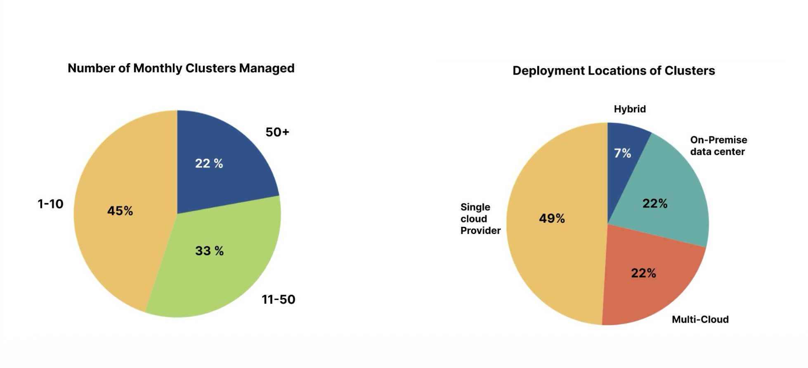
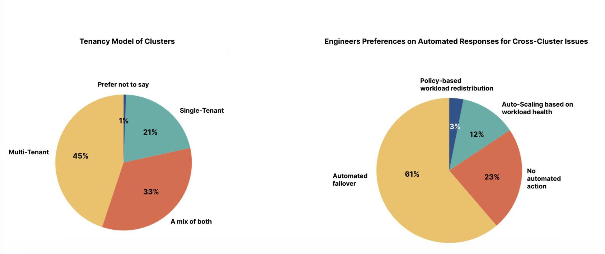
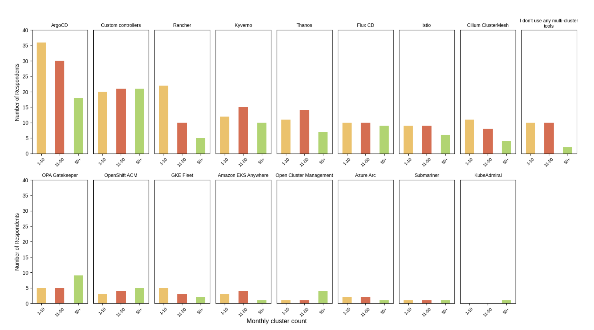
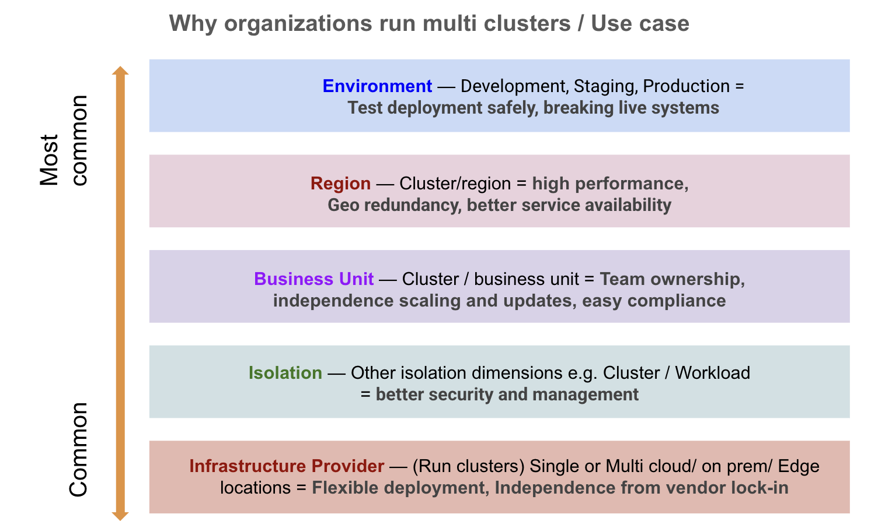
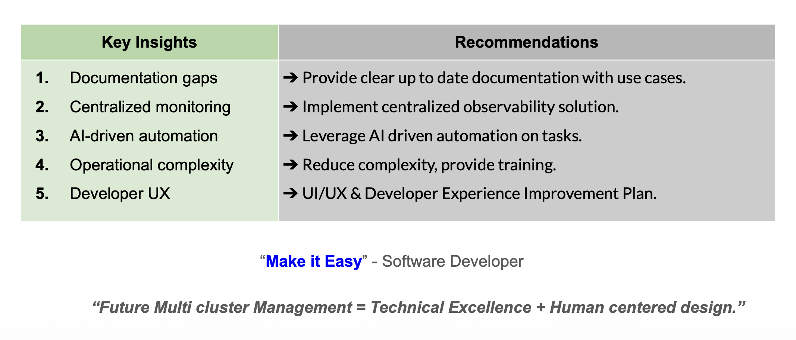
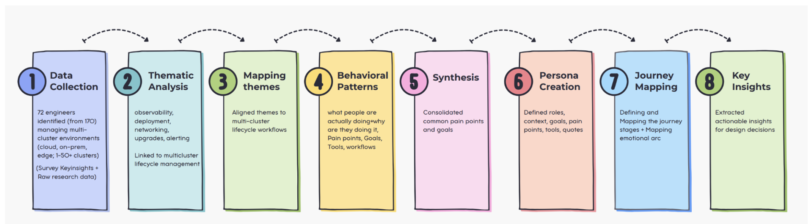
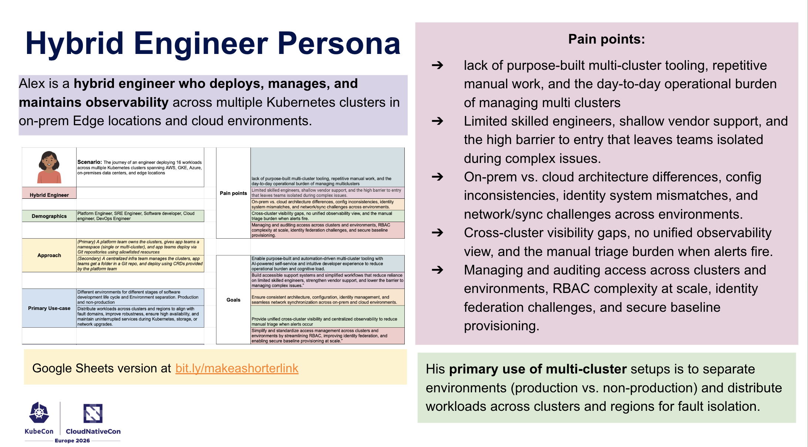
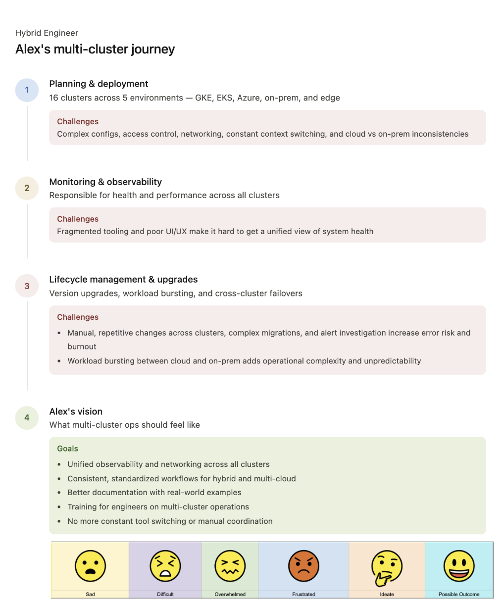

Kubernetes Multi-Cluster User research
Kubernetes multicluster user reseach — survey analysis, research results, persona development, and journey mapping(workflow mapping) for 170 engineers.
Project Overview
Challenge: In the cloud-native ecosystem, managing and deploying multi-cluster operations is very complex.SIG-multi cluster is not only focusing on reducing technical complexity but also focusing on the human side - That’s where our UX research began.
goal is simply make complex multi cluster systems easy to use and turn difficult operations into smooth and engineer friendly.
We designed surveys for engineers who work with multi clusters. We focused on problem areas on Tooling, Environment, Troubleshooting, Observability, and Collaboration, workflows, architecture, multicluster management and deployment and debugging the challenges when they occur.My Role & Responsibility : UX Researcher, UX Designer, Developer experience Researcher
- Working as a UX researcher on Kubernetes multi-cluster systems to identify engineers’ challenges and design developer-friendly multi-cluster experiences.
- Conducted qualitative and quantitative research to identify 170 engineer-facing challenges in multi-cluster operations.
- Performed thematic analysis and open coding to identify key themes, operational pain points, and workflow gaps.
- Identified primary multi-cluster use cases, four major operational challenges, five key recommendations, and actionable developer experience improvements.
- Created a research-backed hybrid engineer persona based on raw research findings to support onboarding and adoption strategies.
- Designed an end-to-end workflow journey map highlighting user goals, actions, frustrations, and operational challenges across multi-cluster environments.
- Helped replace assumption-based product decisions with evidence-driven research insights.
- Presented research findings at KubeCon + CloudNativeCon North America 2025 and KubeCon + CloudNativeCon Europe 2026.
Our research will help
- Identifies real pain points in multi-cluster operations
- Understands engineers’ workflows, needs, and expectations
- Informs better, user-centered solution design
- Reduces complexity and improves usability
- Makes multi-cluster operations more efficient and easier to manage
Methods : User research survey, Qualitative and quantitative analysis for raw responses and numerical data, developer person creation, end to end Developer workflow mapping, identifying developer pain points and challenges and goals, Developer experience, Research planning, Interview synthesis, UX opportunity identification, Design recommendations. Research Documentation, Results and report generation.
Domain Knowledge : Kubernetes, Multi-Cluster Architecture, Observability Cloud-Native Ecosystems, Developer Experience (DevEx), Multicluster workflow.
Tools Google Suite, Figma, Miro, Github
Team: Open source contributors, developers, SIG-Multicluster community
User research planning and method selection & Execution:
Method selection:
The SIG Multi-Cluster team is working to build solutions for engineers operating multi-cluster environments, understanding those engineers’ needs and experiences was a critical first step.
Since the SIG Multi Cluster is still in the early stage of solution development. So we followed user research method selection guidelines, that explains if we wanted to learn about the product which is still in the early stage the Surveys are the best and effective methods to capture feedback from a broad audience (engineers) responsible for deploying, monitoring, and managing multi-cluster setups. We decided to do multi cluster surveys.
After finalizing the user research methods, we developed the survey guidelines to ensure the survey was clear, accessible, and able to reach a broader audience within the guidelines.
Along with that, making sure that the survey reaches the right participants.
What were we included in our survey?
After finalizing the user research methods, we developed the survey guidelines to ensure the survey was clear, accessible, and able to reach a broader audience within the guidelines.
Along with that, making sure that the survey reaches the right participants.
Our target audience
Engineers who are responsible for multi cluster operations - Deploying, monitoring, debugging and maintenance.
Survey questionnaires preparations
In our survey we included a total 21 number of questions = Quantitative 13 + Qualitative 8, With two sections such as participant information and cluster setup overview.
While developing the survey questions, we ensured they covered multi-cluster-related problems and engineers’ expectations, with a focus on workflows, tooling, operational challenges, use cases, and architecture. We shared our questionnaire during the multi-cluster team meeting and received feedback from multiple engineers. The questions were finalized after five rounds of revisions and iterations with the SIG teammates.
Survey Reach:
We designed the survey using Google Docs and deployed it through Google Forms. In partnership with the ContribX team, we created a social media outreach campaign to maximize participant reach. As a result, we received responses from 170 engineers with diverse engineering backgrounds. Here is the link for the ContribX : https://github.com/kubernetes/community/blob/main/sig-contributor-experience/README.md
Qualitative analysis and Quantitative analysis:
In our next steps, we explore the insights we uncovered from the survey responses. What patterns, challenges, and expectations emerged from engineers working with multi-cluster environments?
Engineers responded to the survey?
Finally, from our survey, we received responses from 170 engineers. Among them, 159 engineers (93% completion rate) completed all the survey questions, including both required and optional questions. The remaining 11 engineers skipped the optional questions and responded only to the required questions.
*Note We also mentioned during the survey that all responses would be anonymized, and we will not share the raw data directly. Instead, the data has been synthesized and presented in clear and understandable form for the results and aggregated results we are going to share with the multi cluster team as well as Kubecon presentations.
Process and methods and Tools for analysis:
To initiate the analysis process for the survey responses, we began by studying the data multiple times to fully understand and take ownership of it. This helped us better interpret what engineers were trying to convey. We duplicated the original responses and created a separate file named “Analysis.”
This ensured that the original data remained intact in case of any accidental changes, and allowed us to reuse and adapt the duplicated data for multiple analysis tasks. Next, we filtered and extracted responses where participants mentioned “no,” “-,” “don’t want to mention,” or left questions unanswered. We then consolidated this data in one place to make it easier to review and interpret. Finally, we followed a structured process, as outlined below, to identify patterns in the responses.
Qualitative Analysis Methods and Tools
We conducted a qualitative analysis by first reviewing all collected responses to understand participant perspectives and become familiar with the data. We then used a text-analysis tool to help group responses into categories based on recurring themes and frequency patterns. However, all responses were also manually reviewed to ensure accurate interpretation and categorization.
Using research methods such as thematic analysis, narrative analysis, and coding, we identified and ranked the most common patterns from highest to lowest. Finally, we manually synthesized the findings into key conclusions and actionable insights.
Quantitative Analysis Methods and Tools
We analyzed the quantitative survey data by cleaning and organizing responses, then calculating counts, percentages, averages, and rating distributions across all questions. We identified patterns and trends by comparing responses across user groups, roles, and experience levels, while also examining correlations between related questions.
We used Python to visualize key findings through charts and graphs, making the data easier to interpret. Finally, we cross-referenced quantitative results with qualitative insights to validate patterns and build a stronger evidence-based understanding of user needs and challenges.
Iterative Theme Refinement
The thematic analysis was conducted through multiple iterative reviews of the dataset to improve clarity, consistency, and accuracy. Initial codes were continuously refined, reorganized, merged, or separated into higher-level themes based on recurring patterns and supporting data. This iterative process ensured the final themes were well-structured, credible, and representative of the overall findings.
Qualitative and quantitative analysis highlights:
Overall Quantitative Insights
We analyzed participant roles, cluster scale, deployment environments, and tenancy models to understand how engineers manage Kubernetes systems. The majority of respondents were Platform Engineers (39%) and DevOps Engineers (26%), showing that multi-cluster management is a cross-functional responsibility. Most engineers manage 1–50+ clusters per month, with over half handling more than 10 clusters, highlighting widespread medium to large-scale operations.



Cluster deployments are highly distributed, spanning single cloud (48.8%), on-premise (44.7%), multi-cloud (30.6%), and hybrid environments (26.5%), indicating that engineers often operate across multiple infrastructure types. In terms of tenancy, 76.9% of respondents use multi-tenant or hybrid models, reflecting a strong shift toward shared cluster usage.
Overall, the findings show that Kubernetes multi-cluster operations are widely adopted, cross-functional, and highly complex, driven by scale, environment diversity, and shared infrastructure models.
Qualitative insights:
We identified several key patterns in how engineers manage multi-cluster environments. Clusters are deployed across infrastructure providers (cloud, on-prem, edge), often separated by isolation needs, business units, regions for redundancy, and environment stages (dev, staging, production). Among these, environment separation is the most common practice, enabling safe and controlled deployments.

We also found four major challenges: workload management (51%), observability (39%), operational complexity (25%), and time management (10%). Engineers struggle with distributed visibility, context switching, repetitive tasks, networking complexity, and manual incident handling, where situational awareness is often the biggest bottleneck.
 For future improvements, three key needs emerged: AI-driven automation, flexible system architecture, and simplified UX with clear workflows and documentation. Additionally, a few niche patterns like “dashboard-as-code” and specialized hardware support were also observed.
For future improvements, three key needs emerged: AI-driven automation, flexible system architecture, and simplified UX with clear workflows and documentation. Additionally, a few niche patterns like “dashboard-as-code” and specialized hardware support were also observed.
Research Areas and Recommendations

From our analysis, five key research areas emerged: documentation gaps, centralized monitoring, AI-driven automation, operational complexity, and developer UX. To address these, we recommend improving and updating multi-cluster documentation by identifying gaps in existing materials and working with SIG communities to create practical, real-world engineering guides.
For observability, we recommend building a unified system with shared standards for logs, metrics, storage, network visibility, AI-driven alerts, and role-based dashboards. For automation, AI should handle routine tasks and predict issues before they occur, enabling proactive system management.
To reduce operational complexity and skill gaps, organizations should invest in hands-on training, zero-trust practices, automation reliability, and peer learning through playbooks. Finally, developer UX should be improved by studying real workflows and designing simpler, more intuitive multi-cluster systems.
Overall, the research emphasizes that the future of multi-cluster management depends on combining strong technical systems with human-centered design focused on simplicity and usability.
Hybrid Engineer persona creation and workflow mapping:
What drove the decision to develop personas and journey maps?
Even after collecting and summarizing multi-cluster survey data, the findings can still feel scattered and difficult to apply directly to real-world solutions. While raw research data explains what problems engineers face, it does not always show how those challenges affect different users or when they occur in real workflows.
To make the insights more actionable, we used user research methods such as personas and journey maps to organize the data into clearer patterns, helping better understand user behaviors, pain points, and operational experiences.
Method and process:

We created personas and journey maps by first analyzing raw survey data and identifying recurring patterns and themes. These insights were synthesized into key user pain points and goals, which were then structured into persona templates. Journey maps were developed to visualize user workflows, behaviors, and experiences across different stages, helping uncover actionable product insights and opportunities for improvement.
Alex Persona:

Alex is a hybrid engineer who deploys, manages, and maintains observability across multiple Kubernetes clusters in on-prem Edge locations and cloud environments.
His primary use of multi-cluster setups is to separate environments (production vs. non-production) and distribute workloads across clusters and regions for fault isolation.
Pain points:
- lack of purpose-built multi-cluster tooling, repetitive manual work, and the day-to-day operational burden of managing multi clusters
- Limited skilled engineers, shallow vendor support, and the high barrier to entry that leaves teams isolated during complex issues.
- On-prem vs. cloud architecture differences, config inconsistencies, identity system mismatches, and network/sync challenges across environments.
- Cross-cluster visibility gaps, no unified observability view, and the manual triage burden when alerts fire.
- Managing and auditing access across clusters and environments, RBAC complexity at scale, identity federation challenges, and secure baseline provisioning.
Key insights:
The persona helps identify the right starting point for engineers adopting multi-cluster setups.
- The persona provides a clear, research-backed representation of engineers, replacing the idea of an imagined user.
- Discussions and decisions about the project can be based on real engineer research insights rather than assumptions.
- The persona helps teams focus on solving the most impactful problems engineers face in multi-cluster environments.
- Documentation can be organized around engineers’ real workflows, tasks, and goals.
Workflow mapping:
Hybrid engineer workflows mapping using the User research journey mapping techniques. The journey revealed recurring challenges such as configuration drift, fragmented tooling, networking complexity, manual deployments, operational overhead, and limited visibility across cloud, on-prem, and edge environments. By analyzing what engineers do, think, and feel at each stage, we identified opportunities for unified observability, automation, standardized workflows, simplified networking, reusable documentation, and developer-friendly multi-cluster management systems that reduce operational toil and improve efficiency.
Entire journey insights reveal opportunities to improve tooling, workflows, architecture, frame work, processes, methods, and documentation—helping teams reduce operational friction and deliver a better developer experience for multi-cluster operations.

Key insights:
- Engineers deploying workloads across multi-cluster environments often start with confidence, believing they can manage the complexity with familiar tools and architecture, methods, frame work, documentations.
- The reality of cross-cluster operations — Spending hours on deploying and managing and upgrading multi-clusters, on prem and Cloud architecture difference, network fragmentation, and configuration sprawl, observability, complex UI/UX tooling, manual triage while critical alerts occur — reveals itself gradually.
- The turning point comes when teams quantify the operational burden and adopt unified management approaches with automation, transforming chaos into a scalable, maintainable architecture.
Next Steps:
We identified a Hybrid Engineer persona and created a workflow map, but we still need to understand the challenges faced by other target engineering groups working with multi-cluster systems. As a next step, we plan to create additional personas and workflow maps to identify cross-patterns and uncover the unique problems experienced by different types of engineers from the raw research data. We are also beginning the next phase of user research by conducting 1:1 interviews with engineers to gain deeper insights into their challenges, needs, and experiences while working with multi-cluster solutions.
Findings presented at KubeCon Atlanta-2025, KubeConEU-2026, SIG multicluster community meetings
KubeConNA Video KubeConEU Video Project Documentation